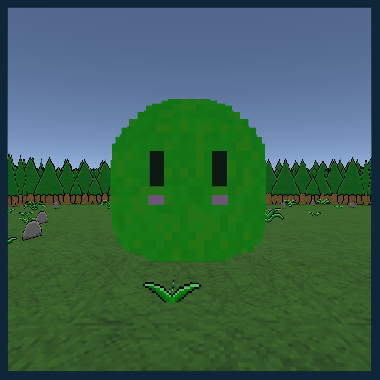
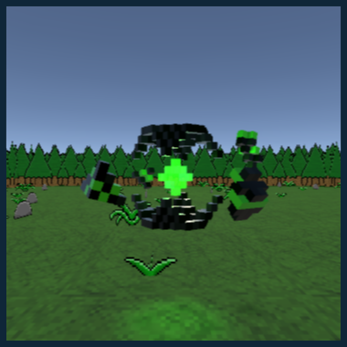
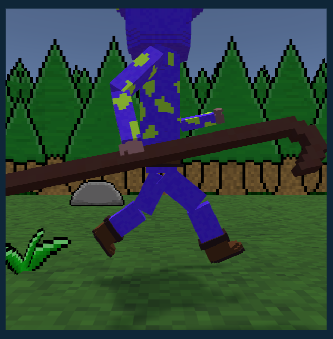
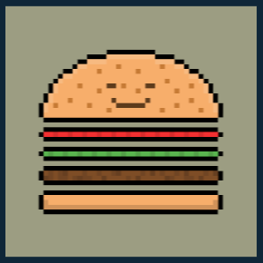
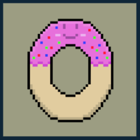

Controles
Movimentação:
- Teclado: W → frente · A → esquerda · S → baixo · D → direita
- Mouse: mover para controlar a câmera
- Controle: alavanca esquerda → movimentação · alavanca direita → câmera
- Correr: Shift no teclado · Botão 8 no controle
Magia:
- Teclado/Mouse: botão esquerdo do mouse → projétil do cajado
- Controle: Botão 2 → projétil do cajado
Interação com Abas & Interface:
- Fechar abas: Esc no teclado · Botão 1 no controle
- Interagir/selecionar: botão esquerdo do mouse · Botão 2 no controle
- Abrir Inventário: Tab · Botão 3 no controle
Sistemas
Onda de inimigos:
Para iniciar uma nova onda, pressione a tecla “E” no teclado. Cada onda possui um “preço” fixado: por exemplo, onda 1 tem preço 1, onda 2 tem preço 2, e assim por diante. Esse preço determina quantos (e quais) inimigos serão invocados. Cada inimigo tem um valor associado à sua dificuldade — cada vez que um inimigo for invocado, esse valor é descontado do preço da onda até que o preço chegue a zero. Quando isso acontecer, a onda termina.
Loja:
No jogo, a loja tem três categorias de itens:
- Cajado: muda a cada certo número de ondas concluídas.
- Itens do meio: até o momento só existem dois itens — o item da categoria do meio é sempre o hambúrguer.
- Itens da direita: funciona de forma semelhante aos itens do meio, mas em vez do hambúrguer, o item da direita é a rosquinha.
Começar
Como Começar:
Bem-vindo ao mundo de waves em Nostalgia! Vamos dar o primeiro passo para você sobreviver e se divertir. Para iniciar, aperte a tecla “E” no teclado — isso vai disparar a nova onda de inimigos. Cada inimigo derrotado te dá 10 moedas como recompensa. Use as moedas para juntar dinheiro, comprar novos cajados e mais itens — cada compra pode fazer a diferença. O objetivo: sobreviva o máximo que puder. Quanto mais ondas você passar, mais difícil vai ficando — e mais prestígio você ganha!
Dicas para Mandar Bem:
Recomendo fortemente comprar rosquinhas — elas ajudam bastante no meio da sessão. Também foque em chegar ao máximo da vida do seu personagem — isso vai facilitar demais para alcançar novos recordes. Explore diferentes cajados conforme for juntando moedas — variar o equipamento faz parte da estratégia. Divirta-se, treine bastante, e que suas ondas sejam épicas!
NPCs
Jubiscreu:
Um lojista deveras peculiar que ronda os corredores de magia de Nostalgia. Pouco se sabe com certeza sobre ele — exceto que, em sua era passada, Jubiscreu foi um grandioso mago cujas habilidades moldaram feitiços e cajados que agora vemos no mundo do jogo. Mas, como descobrimos isso… nunca saberemos! Visite a loja dele com frequência: seus cajados e itens mudam, e você não quer perder o momento em que ele decide reinventar algum artefato mágico.

Inimigos
Slime Verde:
Uma criatura aparentemente inofensiva: uma pequena gota verde que adora "abraçar" viajantes — e quem conseguiria atacar algo tão adorável? Mas não se deixe enganar pela fofura! Esse slime salta, gruda e tenta drenar sua energia aos poucos. -> Fala do nosso patrocinador, Jubiscreu: "Ah, tão simplesmente verde!""
Essência Verde:
Não é bem uma criatura, e muito menos algo comum — é uma energia viva, estranha e extremamente valiosa. Muitos acreditam que essa essência faça parte da própria vitalidade da floresta, uma força antiga com consciência ou talvez com vontade própria. Se realmete é um "ser vivo"… por que resolver atacar aventureiros? -> Fala do nosso patrocinador, Jubiscreu: “Como um ser vivo poderia ser tão vil e maligno a ponto de atacar um ser tão simples?”
Aranha:
Uma criatura aparentemente simples, porém extremamente perigosa. No mundo de Nostalgia, a Aranha é uma grande predadora que… digamos, “gosta” de viajantes — especialmente quando estes acabam dentro de sua barriga. Suas teias se estendem pelas cavernas e florestas, capturando os incautos e oferecendo-lhe um destino nada confortável. -> Fala do nosso patrocinador, Jubiscreu: “Eu não gosto de aranhas, são grandes, cheias de olhos, e de onde saem as suas teias, vós já olhastes?!”

Olho Azul:
Um inimigo que parecia inofensivo, à primeira vista: um olho solto, flutuando sozinho nas profundezas da floresta. Mas não se engane — esses “Olhos Azuis” são raros e extremamente perigosos. Dão a impressão de serem restos ou relíquias de gigantes de eras antigas… quem sabe até de seres colossais reais que um dia caminharam sobre a terra. -> Fala do nosso patrocinador, Jubiscreu: “Eu gostaria muito de ver o corpo de um gigante de verdade, mas eu me contento só com um olho mesmo.”

Em Breve:
Essa parte da wiki ainda está em desenvolvimento. por favor, aguarde!
Cajados
Cajado de Madeira:
O primeiro cajado que todo mago iniciante recebe. Simples, elegante e repleto de potencial: ele é feito de madeira comum, firme ao toque e pronto para canalizar magia. Não espere efeitos extravagantes vindos dele — mas será útil no começo de sua jornada. Este cajado de madeira é o seu companheiro fiel no começo da jornada, aquele que marca o início do caminho mágico, quando tudo ainda está por ser descoberto.
Cajado em V:
Elegante, simples e… extravagante. Esse cajado que recebe forma em “V” na ponta foge dos convencionais: ao invés da curva suave típica de uma bengala mágica, ele ostenta duas hastes que se abrem em ângulo, formando o símbolo de vitória antes mesmo do feitiço. Apesar de sua aparência incomum, o poder não deixa a desejar. Ideal para quem quer chamar atenção e mostrar que magia e estilo caminham lado a lado. Use-o com confiança: este é o cajado de quem já domina o básico e está pronto para impressionar em cada onda.

Galho Arcano:
Este cajado carrega em si uma lenda: foi forjado a partir da madeira da própria Yggdrasil, a árvore do mundo que sustenta realidades e conecta o visível ao invisível. Pouquíssimos existem, cada exemplar se reconhece pela textura viva e pelas vinhas que parecem pulsar com força vegetal. Seu verdadeiro poder é surpreendente: permite disparar projéteis feitos da própria natureza. É uma arma para quem deseja canalizar a essência da vida.

Cajado Rachado:
Este cajado é quase lendário — tão raro que existem apenas três no mundo de Nostalgia. Ele era um dos três itens supremos usados pelo mítico grupo chamado “Os Três Reis Magos”. Na grande batalha contra o ser conhecido como Khaos, os reis canalizaram toda sua mana e parte da energia de seus cajados para selar Khaos em fragmentos espalhados pelo mundo — o resultado foi um empate, uma vitória amarga. Hoje, o Cajado Rachado não possui mais todo o poder de outrora, mas ainda assim permanece como uma peça de coleção poderosa — digna para quem enfrenta ondas maiores e busca glória. Use-o com reverência, e lembre-se da história por trás das rachaduras: poder, sacrifício e magia antiga entrelaçados.

Em Breve:
Essa parte da wiki ainda está em desenvolvimento. por favor, aguarde!
Itens
Hámburguer:
Um hámburguer muito apetitoso e acolhedor. Ao segurá-lo, dá a sensação de que um banquete está prestes a começar. No mundo de Nostalgia, o hámberguer serve para restaurar uma parte da vida do jogador — perfeito quando a batalha fica acirrada e você precisa de um respiro.
Rosquinha:
Uma rosquinha doce, irresistível! aquele tipo de guloseima que parece vibrar com energia própria. No mundo de Nostalgia, ela vai além da simples restauração: a rosquinha serve para aumentar a vida máxima do jogador — concedendo-lhe mais resistência e preparo para enfrentar ondas maiores.
